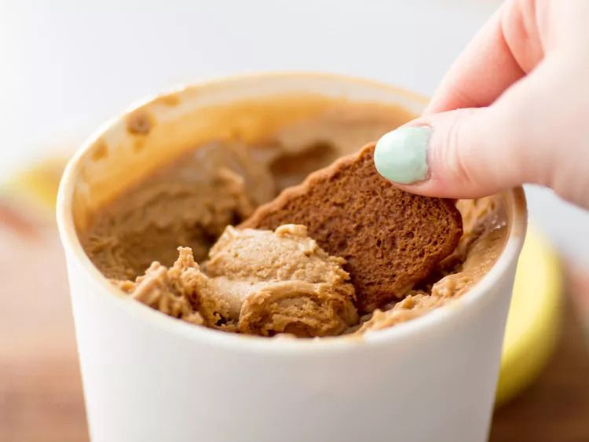

Speculoos (Biscoff) Ice Cream

Description
Creamy, caramelly, & cinnamony with crunchy Biscoff chunks
Ingredients
Yield: 1 qt
- Egg yolks – about 6 (3/8 cup / 3 oz)
- Sugar – 1/4 cup (1.8 oz)
- Powdered milk – 1/4 cup (23 g)
- Corn syrup – 1/4 cup (2.9 oz)
- Kosher salt – 1/2 tsp
- Baking soda – 1/8 tsp
- Heavy cream – 1 1/2 cups (12 oz)
- Whole milk – 1 cup (8 oz)
- Vanilla extract – 1 tsp
- Ice
- Cold water
- Biscoff cookies – 8 oz
Directions
- In a small saucepan, combine egg yolks, sugar, powdered milk, corn syrup, salt, & baking soda, stirring with a whisk.
- Add cream & milk and mix, stirring with a whisk.
- Heat the mixture over medium heat, whisking frequently, until it reaches 170°.
- Add vanilla extract and mix.
- Strain the mixture into an airtight container.
- In a large bowl, combine ice and cold water. Place the ice cream base in the ice-water bath. Chill the bowl (with the ice cream base and ice-water bath) in the refrigerator for at least 8 hours.
- While the base is cooling, crush 6 oz of the Biscoff cookies into crumbs in a food processor.
- Chop the remaining Biscoff cookies.
- Transfer the Biscoff crumbs & pieces to a medium bowl. Chill the bowl in the freezer.
- Churn the ice cream in an ice cream maker according to the machine's instructions.
- Transfer the ice cream into the chilled bowl with Biscoff crumbs & pieces. Thoroughly mix with a spatula.
- Transfer the ice cream into an airtight container. Chill in the freezer for at least 4 hours.